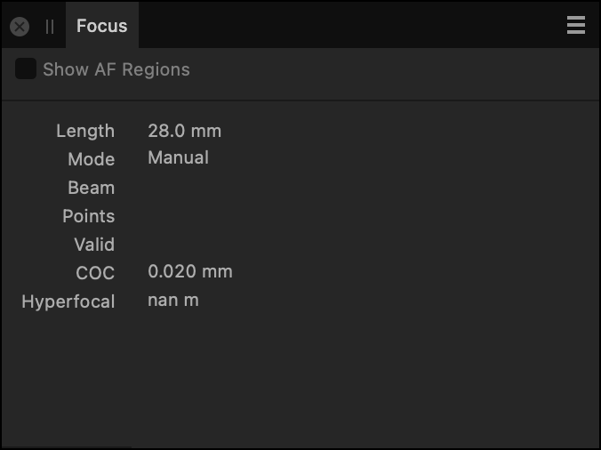

The Focus panel reports the camera settings at the point at which the image was captured. Reported settings include Mode, Beam, CoC and Hyperfocal.

The Focus panel in Develop Persona.
Settings (or Preferences)
The following settings are available in the panel:
Show AF Regions—when selected, areas of the image, which are within the auto focus region set by the camera, are highlighted. This is a feature for Canon cameras (CR2)